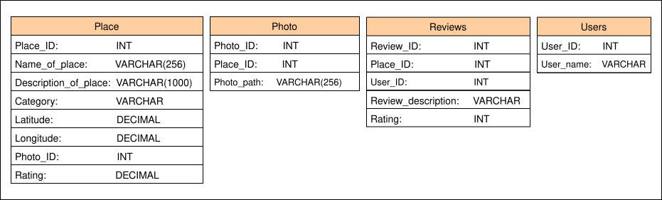
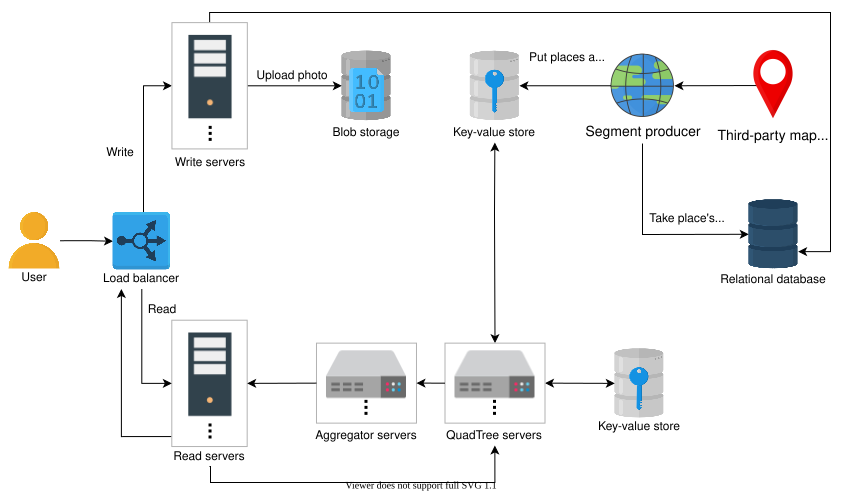
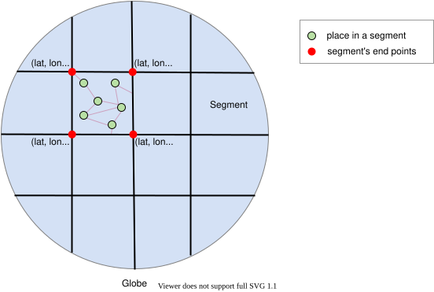

29. Design a Proximity Service - Yelp
System Design: Yelp
System Design: Yelp
Learn about the requirements of a proximity service like Yelp.
We'll cover the following
What is Yelp?#
Yelp is a one-stop platform for consumers to discover, connect, and transact with local businesses. With it, users can join a waitlist, make a reservation, schedule an appointment, or purchase goods easily. Yelp also provides information, photos, and reviews about local businesses.
The user provides the name of a place or its GPS location, and the system finds places that are nearby. The user can also upload their opinions on this platform in the form of text, pictures, or ratings for a place they visited. Other location-based services include Foursquare and Google Nearby.
Services based on proximity servers are helpful in finding nearby attractions such as restaurants, theaters, or recreational sites. Designing such a system is challenging because we have to efficiently find all the possible places in a given radius with minimum latency. This means that we have to narrow down all the locations in the world, which could be in the billions, and only pinpoint the relevant ones.
How will we design Yelp?#
Here is the breakdown of Yelp’s design:
- Requirements: In this lesson, we define the requirements and estimate the required servers, storage, and bandwidth of our system.
- Design:In this lesson, we define the API design, the database schema, the components of our system, and the workflow of Yelp.
- Design considerations: In this lesson, we dive deep into the design of the Yelp system.
- Quiz: In this lesson, we take a quiz to test our knowledge of Yelp design.
Let’s start our design by defining its requirements.
Requirements of Yelp’s Design
Requirements of Yelp’s Design
Learn about the requirements for a proximity service like Yelp.
Requirements#
Let’s identify the requirements of our system.
Functional requirements#
The functional requirements of our systems are below:
-
User accounts: Users will have accounts where they’re able to perform different functionalities like log in, log out, add, delete, and update places’ information.
Note: There can be two types of users: business owners who can add their places on the platform and other users who can search, view, and give a rating to a place.
-
Search: The users should be able to search for nearby places or places of interest based on their GPS location (longitude, latitude) and/or the name of a place.
-
Feedback: The users should be able to add a review about a place. The review can consist of images, text, and a rating.
Non-functional requirements#
The non-functional requirements of our systems are:
-
High availability: The system should be highly available to the users.
-
Scalability: The system should be able to scale up and down, depending on the number of requests. The number of requests can vary depending on the time and number of days. For example, there are usually more searches made at lunchtime than at midnight. Similarly, during tourist season, our system will receive more requests as compared to in other months of the year.
-
Consistency: The system should be consistent for the users. All the users should have a consistent view of the data regarding places, reviews, and images.
-
Performance: Upon searching, the system should respond with suggestions with minimal latency.
Resource estimation#
Let’s assume that we have:
- A total of 178 million unique users.
- 60 million daily active users.
- 500 million places.
Number of servers estimation#
We need to handle concurrent requests coming from 60 million daily active users. As we did in our discussion in the back-of-the-envelope lessons, we assume an RPS of 8,000.
RPS of a serverNumber of daily active users=800060 million=7500 servers
Estimating the Number of Servers
| Number of Daily Active Users (in Millions) | 60 |
| RPS of a Server | 8000 |
| Number of Servers Required | f7500 |
Storage estimation#
Let’s calculate the storage we need for our data. Let’s make the following assumptions:
-
We have a total of 500 million places.
-
For each place, we need 1,296 Bytes of storage.
-
We have one photo attached to each place, so we have 500 million photos.
-
For each photo, we need 280 Bytes of storage. Here, we consider the row size of the photo entity in the table, which contains a link to the actual photo in the blob store.
-
At least 1 million reviews of different places are added daily.
-
For each review, we need 537 Bytes of storage.
-
We have a total of 178 million users.
-
For each user, we need 264 Bytes of storage.
Note: The Bytes used for each place, photo, review, and user are based on the database schema that we’ll discuss in the next lesson.
The following calculater computes the total storage we need:
Estimating Storage Requirements
| Type of information | Size Required by an Entity (in Bytes) | Count (in Millions) | Total Size (in GBs) |
| Place | 1296 | 500 | f648 |
| Photo | 280 | 500 | f140 |
| Review | 537 | 1 | f0.54 |
| User | 264 | 178 | f46.99 |
| Total Storage Required | f835.53 |
Bandwidth estimation#
To estimate the bandwidth requirements for Yelp, we categorize the bandwidth calculation of incoming and outgoing traffic.
For incoming traffic, let’s assume the following:
- On average, five places are added every day.
- For each place, we take up 1,296 Bytes.
- A photo of size 3 MB is also attached with each place. This is the size of the photo that we save in the blob store.
- One million reviews of different places are added every day.
- Each review, takes up 537 Bytes.
We divide the total size of information per day by 86,400 to convert it into per second bandwidth.
Estimating Incoming Bandwidth Requirements
| Average Number of Places Added Daily | 5 |
| Storage Needed for Each Place (Bytes) | 1296 |
| Size of Photo (in MBs) | 3 |
| Total Size of Place Information (Bytes) | f15006480 |
| Average Number of Reviews Added Daily (in Millions) | 1 |
| Storage Needed for Each Review (Bytes) | 537 |
| Total Size of Reviews (Bytes) | f537000000 |
| Total Incoming Bandwidth (KBps) | f6.39 |
| Total Incoming Bandwidth (Kbps) | f51.12 |
For outgoing traffic, let’s assume the following:
- A single search returns 20 places on average.
- Each place has a single photo attached to it that has an average size of 3 MB.
- Every returned entry contains the place and photo information.
Considering that there are 60 million active daily users, we come to the following estimations:
Estimating Outgoing Bandwidth Requirements
| Average Number of Places Returned on Each Search Request | 20 |
| Size of Place (in Bytes) | 1296 |
| Size of Photo (in MB) | 3 |
| Total Size of Place Information (Bytes) | f60025920 |
| Outgoing Bandwidth Required for a Single Request (Kbps) | f0.69 |
| Outgoing Bandwidth Required for a Single Request (KBps) | f5.52 |
| Daily Active Users (in Millions) | 60 |
| Total Outgoing Bandwidth Required (Kbps) | f331200000 |
| Total Outgoing Bandwidth Required (Gbps) | f331.2 |
We need a total of approximately 51 Kbps of incoming traffic and approximately 331 Gbps of outgoing, assuming that the uploaded content is not compressed.
Total bandwidth requirements = 51 Kbps+331 Gbps≈331 Gbps.
Building blocks we will use#
The design process of Yelp utilizes many building blocks that have already been discussed in the initial chapters of the course. We’ll consider the following concepts while designing Yelp:
- Caching: We’ll use the cache to store information about popular places.
- Load balancer: We’ll use the load balancer to manage the large amount of requests.
- Blob storage: We’ll store images in the blob storage.
- Database: We’ll store information about places and users in the database.
We’ll also rely on Google Maps to understand the feature of searching for places within a particular radius.
Design of Yelp
Design of Yelp
Learn to fulfill the design requirements of the Yelp system.
We'll cover the following
We identified the requirements and calculated the estimations for our Yelp system in the previous lesson. In this lesson, we discuss the API design, go through the storage schema, and then dive into the details of the system’s building blocks and additional components.
Parameter | Description |
| This is the type of search the user makes—for example, a search for restaurants, cinemas, cafes, and so on. |
| This contains the location of the user who’s searching with Yelp. |
| This is the specified radius where the user is trying to find the required category. |
This process returns a JSON object that contains a list of all the possible items in the specified category that also fall within the specified radius. Each entry has a place name, address, category, rating, and thumbnail.
The API call for searching based on the name of a place like “Burger Hut” will be:
search(name_of_place, user_location, radius)
Parameter | Description |
| This contains the name of the place that the user wants to search for. |
This process returns a JSON object that contains information of the specified place.
Add a place#
The API call for adding a place is below:
add_place(name_of_place, description_of_place, category, latitude, longitude, photo}
Parameter | Description |
| This contains the name of the place, for example, "Burger Hut". |
| This contains a description of the place. For example, "Burger Hut sells the yummiest burgers". |
| This specifies the category of the place—for example, "cafe". |
| This tells us the latitude of the place. |
| This tells us the longitude of the place. |
| This contains photos of the place. There can be a single or multiple photos. |
This process returns a response saying that a place has been added, or an appropriate error if it fails to add a place.
Add a review#
The API call for adding a place is below:
add_review(place_ID, user_ID, review_description, rating)
Parameter | Description |
| This contains the ID of the place whose review is added. |
| This contains the ID of the user who adds the review. |
| This contains the review of the place—for example, "the food and ambiance were superb". |
| This contains the rating of the place—for example, 4 out of 5. |
This process returns a response that a review has been added, or an appropriate error if it fails to add a review.
Storage schema#
Let’s define the storage schema for our system. A few of the tables we might need are “Place,” “Photos,” “Reviews,” and “Users.”
Let’s define the columns of the “Place” table:
-
Place_ID: We use the sequencer to generate an 8 Bytes (64 bits) unique ID for a place.
Note: We generate IDs using the unique ID generator.
-
Name_of_Place: This is a string that contains the name of the place. We use 256 Bytes for it.
-
Description_of_Place: This holds a description of the place. We use 1,000 Bytes for it.
-
Category: This specifies the type of place like restaurants, cinemas, bookshops, and so on (8 Bytes).
-
Latitude: This stores the latitude of the location (8 Bytes).
-
Longitude: This stores the longitude of the location (8 Bytes).
-
Photos: This contains the foreign key (8 Bytes) of another table “Photos,” which contains all the photos related to a particular place.
-
Rating: This stores the rating of the place. It shows how many stars a place gets out of five. The rating is calculated based on the reviews it gets from the users.
The columns mentioned above are the most important ones in the table. We can add more columns like “menu,” “address,” “opening and closing hours,” and so on. Therefore, keeping in mind the essential columns, the size of one row of our table will be:
Size = 8 + 256 + 1000 + 8 + 8 + 8 + 8 = 1296 bytes
Now let’s define the “Photos” table:
-
Photo_ID: We use the sequencer to generate a unique ID for a photo (8 Bytes or 64 bits).
-
Place_ID: We use the foreign key (8 Bytes) from the “Place” table to identify which photo belongs to which place.
- Photo_path: We store the photos in blob storage and save the photo’s path (256 Bytes) in this column.
Size = 8 + 8 + 8 + 256 = 280 bytes
We need another table called “Reviews” to store the reviews, ratings, and photos of a place.
-
Review_ID: We use the sequencer to generate a unique ID of 8 Bytes (64 bits) for a review.
-
Place_ID: The foreign key (8 Bytes) from the “Place” table to determine which place the rating belongs to.
-
User_ID: The foreign key (8 Bytes) from the “Users” table to identify which review belongs to which user.
-
Review_description: This holds a description of the review. We use 512 Bytes for it.
-
Rating: This stores how many stars a place gets out of five (1 Byte).
Size = 8 + 8 + 8 + 512 + 1 = 537 bytes
We use the “Users” table to store user information.
-
User_ID: We use the sequencer to generate a unique ID for a user (8 Bytes).
-
User_name: This is a string that contains the user’s name. We use 256 Bytes for it.
Size = 8 + 256 = 264 bytes
Note: The
INTin the following schema contains an 8-Byte ID that we generate using the unique ID generator.

Design#
Now we’ll discuss the individual building blocks and components used in the design of Yelp and how they work together to complete various functional requirements.
Components#
These are the components of our system:
-
Segments producer: This component is responsible for communicating with the third-party world map data services (for example, Google Maps). It takes up that data and divides the world into smaller regions called segments. The segment producer helps us narrow down the number of places to be searched.
-
QuadTree servers: These are a set of servers that have trees that contain the places in the segments. A QuadTree server finds a list of places based on the given radius and the user’s provided location and returns that list to the user. This component mainly aids the search functionality.
-
Aggregators: The QuadTrees accumulate all the places and send them to the aggregators. Then, the aggregators aggregate the results and return the search result to the user.
-
Read servers: We use a set of read servers that we use to handle all the read requests. Since we have more read requests, it’s efficient to separate these requests from the write requests. Each read server directs the search requests to the QuadTrees’ servers and returns the results to the user.
-
Write server: We use a set of write servers to handle all the write requests. Each write server handles the write requests of the user and updates the storage accordingly. Examples for write requests include adding a place, writing a comment, rating a place, and so on.
-
Storage: We’ll use two types of storage to fulfill our diverse needs.
-
SQL database: Our system will have different tables like “Users,” “Place,” “Reviews,” “Photos,” and others as described below. The data in these tables is inherently relational and structured. We need to perform queries like places a user visited, reviews they added, or view all the reviews of a specific place. It’s easy to perform such queries in a SQL-based database. We also want all users to have a consistent view of the data, and SQL-based databases are better suited for such use cases. We’ll use reliable and scalable databases, as is discussed in the Database building block.
-
Key-value stores: We’ll need to fetch the places in a segment efficiently. For that, we store the list of places against a segment ID in a key-value store to minimize searching time. We also save the QuadTree information in the key-value store, by storing the QuadTree data against a unique ID.
-
-
Load balancer: A load balancer distributes users’ incoming requests to all the servers uniformly.

Workflow#
The user puts in a search request. We find all the relevant places in the given radius, while considering the user’s location (latitude, longitude).
We explain the detailed workflow of our system in terms of the required functionalities below:
Searching a place: The load balancers route read requests to the read servers upon receiving them. The read servers direct them to the QuadTree servers to find all the places that fall within the given radius. The QuadTree servers then send the results to the aggregators to refine them and send them to the user.
Adding a place or feedback: The load balancers route the write requests to the write servers upon receiving them. Depending on the provided content, meaning the place information or review, the write servers add an entry in the relational database and put all the related images in the blob storage.
Making segments: The segment’s producer splits the world map taken from the third-party map service into smaller segments. The places inside each segment are stored in a key-value store. Even though this is a one-time job, this process is repeated periodically for newer segments and places. Since the probability of new places being added is low, we update our segments every month.
We’ve discussed the design of Yelp, its API design, and the relevant storage schema. In the next lesson, we’ll talk about the design considerations.
Design Considerations of Yelp
Design Considerations of Yelp
Learn about the different design aspects of the Yelp system.
Introduction#
We discussed the design, building blocks, components, and the entire workflow of our system in the previous lesson, which brought up a number of interesting questions that now need answering. For example, what approach do we use to find the places, or how do we rank places based on their popularity? This lesson addresses important design concerns like the ones we just mentioned. The table given below summarizes the goals of this lesson.
Section/Sub-section | Purpose |
Searching | This process divides the world into segments to optimize the search, so that all nearby sites in a given location and radius can be identified. |
Storing Indexes | We index the places to improve query performance and estimate the storage required for all of the indexes. |
Searching Using Segments | We search all the desired places by combining the segments. |
Dynamic Segments | We solve the static segment limitations using dynamic segments. |
Searching Using a QuadTree | We explore the searching functionality using a QuadTree. |
Space Estimations for a QuadTree | We estimate the storage required for a QuadTree. |
Data Partitioning | We look into the options we can use to partition data. |
Ensuring Availability | We look into how we’ll ensure the availability of the system. |
Inserting a New Place | We look into how we’ll insert the place in a QuadTree. |
Ranking Popular Places | We rank the places of the system. |
Evaluation | We evaluate how our system fulfills the non-functional requirements. |
Searching#
From Google Maps, we were able to connect segments and meet the scalability challenge to process a large graph efficiently. The graph of the world had numerous nodes and vertices, and traversing them was time-consuming. Therefore, we divided the whole world into smaller segments/subgraphs to process and query them simultaneously. The segmentation helps us improve the scalability of the system.
Each segment will be of the size 5×5 miles and will contain a list of places that exist within it. We only search a few segments to locate destinations that are close by. We can use a given location and defined radius to find all the nearby segments and identify sites that are close.

Points to Ponder
Question 1
How will we find nearby places if we create a table for storing all places?
1 of 2
We can store all the places in a table and uniquely identify a segment by having a segment_ID. We can index each segment in the database. Now, we have limited the number of segments we need to search, so the query will be optimized and return results quickly.
Improve data fetching#
We use a key-value store for quick access to places in the segments. The key is the segment_ID, while the value contains the list of places in that segment. Let’s estimate how much space we need to store the indexes.
We can usually store a few MBs in the value of the key-value store. If we assume that each segment has 500 places then it will take up 500×1296 Bytes=0.648MB, and we can easily store it as a value.
The total area of the earth is around 200 million square miles, and the land surface area is about 60 million square miles. If we consider our radius to be ten miles, then we’ll have 6 million segments. An 8-Byte identifier will identify each segment.
Let’s calculate how much memory we need.
| Total Area of the Earth (Million Square Miles) | 60 |
| Search Radius (Miles) | 10 |
| Number of Segments (Millions) | f6 |
| Segment_ID (Bytes) | 8 |
| Place_ID (Bytes) | 8 |
| Number of Places (Millions) | 500 |
| Total Space (TB) | f4.048 |
Search using segments#
A user may select a radius for searching places that aren’t present in a single segment. So, we need to combine multiple segments by connecting the segments to find locations within the specified radius—say, five miles.
First, we constrain the number of segments. This reduces the graph size and makes the searching process optimizable. Then, we identify all the relevant locations, compute the distance from the searching point, and show it to the user.
Points to Ponder
Question
Can you identify a problem with the current approach?
Dynamic segments#
We solve the problem of uneven distribution of places in a segment by dynamically sizing the segments. We do this by focusing on the number of places. We split a segment into four more segments if the number of places reaches a certain limit. We assume 500 places as our limit. While using this approach, we need to decide on the following questions:
- How will we map the segments?
- How will we connect to other segments?
We use a QuadTree to manage our segments. Each node contains the information of a segment. If the number of places exceeds 500, then we split that segment into four more child nodes and divide the places between them. In this way, the leaf nodes will be those segments that can’t be broken down any further. Each leaf node will have a list of places in it too.
Search using a QuadTree#
We start searching from the root node and continue to visit the nodes to find our desired segment. We check every node to see if it has more child nodes. If a node has no more children, then we stop our search because that node is the required one. We also connect each child node with its neighboring nodes with a doubly-linked list. All the child nodes of all the parents nodes are connected through the doubly-linked list. This list allows us to find the neighboring segments when we can move forward and backward as per our requirement. After identifying the segments, we have the required PlaceID values of the places and we can search our database to find more details on them.
Point to Ponder
Question
Is there an alternative approach to find the neighboring segments?
The following slides show how the process of searching for a place works. If a node has the places we need, we stop there. Otherwise, we explore more nodes until we reach our search radius. After finding the node, we query the database for information related to the places and return the desired ones.
Storage space estimation for QuadTrees#
Let’s calculate the storage we need for keeping QuadTrees:
-
We store the
PlaceID,Latitude, andLongitudefor each place in the node. Each of these values is of the size 8 Bytes. For 500 million places, we need the following amount of storage for all places:- (8+8+8)×106×500=12GB
-
We’ll have 500 places in a single node. So, for 500 million places, we’ll need 500500M=1M leaf nodes.
-
The QuadTree with 1 million leaf nodes has approximately 1/3rd of the leaf nodes of the internal nodes (all the nodes up the leaf level), and each internal node has four pointers to its child nodes. If we’ll assume 8 Bytes for each pointer, then we’ll need 1M∗1/3∗4∗8=10.67MB of space for the internal nodes.
-
We can get the total space needed to store all the internal nodes by adding 12GB and 10.67MB, that is, 12.01GB approximately.
We can easily store a QuadTree on a server.
Let’s try the following calculator to calculate the storage needed for a QuadTree:
| PlaceID, Latitude, and Longitude (Bytes) | 24 |
| Total Number of Places (Millions) | 500 |
| Total Space Needed to Store All Places (GB) | f12 |
| Limit of Places for Each Segment | 500 |
| Number of Segments (Millions) | f1 |
| Number of Pointers to Hold Children Pointers | 4 |
| Size of Each Pointer (Bytes) | 8 |
| Total Space to Store All Internal Nodes (MB) | f10.67 |
| Total Space to Store QuadTrees (GB) | f12.01 |
Data partitioning#
Keeping 20% growth per year in mind, the number of places will increase. We can partition data on the following basis:
-
Regions: We can split our places into regions on the basis of zip codes. This way, all the places that belong to a specific region are stored on a single node. We store information on the region along with the place, so that we can query on the basis of regions too. We can use the user’s region to find the places in that specific region.
This data partitioning comes with a few challenges. For example, if a region becomes popular during tourist season, it can affect the performance of our system. We might have numerous queries on the server that might result in slow responsiveness to user queries.
-
PlaceID: We can partition data on the basis ofPlaceIDinstead of the region to avoid the query overload in popular seasons or rush hours. We can use a key-value store to store the places. In this case, the key is thePlaceIDand the value contains the server in which that place is stored. This will make the process of fetching places more efficient.
So, we’ll opt for partitioning on the basis of places. Moreover, we’ll also use caches for popular places. The cache will have information about that particular place.
Ensure availability#
Consider a scenario where multiple people in the same radius place a search request. If we have a single QuadTree, it’ll affect the availability of the users. So, we can’t rely on a single QuadTree. To cater to this problem, we replicate our QuadTrees on multiple servers to ensure availability. This allows us to distribute the read traffic and decrease the response time. QuadTrees are built on a server, so we can use the server ID as a key to identify the server on which the QuadTree is present. The value is the list of places that the QuadTree holds. The key-value store eases the rebuilding of the QuadTree in case we lose it.
Point to Ponder
Question
How will the leader-follower approach help us in replication?
Insert a new place#
We insert a new place into the database as well as in our QuadTree. We find the segment of the new place if the Quadtree is distributed on different servers, and then we add it to that segment. We split the segment if required and update the QuadTree accordingly.
Rank popular places#
We need a service, a rating calculator, which calculates the overall rating of a service. We can store the rating of a place in the database and also in the QuadTree, along with the ID, latitude, and longitude of the place. The QuadTree returns the top 50 or 100 popular places within the given radius. The aggregator service determines the actual top places and returns them to the user.
Note: We don’t expect the rating to be updated within hours, as such frequent changes in QuadTrees or databases can be expensive. We update them once a day, when the load is minimal.
Finalized design#
We added a few new components to our design. We introduced caches to store popular places. This allows us to fetch the places much faster. Moreover, we also added a rating calculator that sorts the places based on their ratings. This will enhance user experience, since the places with a good rating will be displayed first.
The updated design of our system is shown below:

Evaluation#
Let’s see how our system design fulfills our requirements.
- Availability: We partitioned the data into smaller segments instead of having to deal with a huge dataset consisting of all the places on the world map. This made our system highly available. We also replicated the QuadTrees data using key-value stores to ensure availability.
- Scalability: We split the whole world into smaller dynamic segments. This allows us to search for a place within a specific radius and shorten our search area. We then used QuadTrees in which each child node holds a single segment. Upon adding or removing a place, we can restructure our QuadTrees. So, we were able to make our system scalable.
- Performance: We reduced the latency by using caches. We cached all the famous and popular places, so request time was minimized.
- Consistency: The users have a consistent view of the data regarding places, reviews, and photos because we used reliable and fault-tolerant databases like key-value stores and relational databases.
Summary#
The proximity-based servers allow the user to search for a specific place or places nearby. The map data of the world is huge and dividing it into segments and finding the specific segment was a challenge in itself. So, we used QuadTrees to optimize our search and provided the user with a list of places with minimum latency.
Quiz on Yelp's Design
Quiz on Yelp's Design
Let's test our understanding of the design of a proximity server.
Quiz
(Select all that apply.) Which requirement will not be fulfilled if we don’t constrain the number of segments to reduce the graph size?
A)
Availability
B)
Consistency
C)
Scalability
D)
Reliability